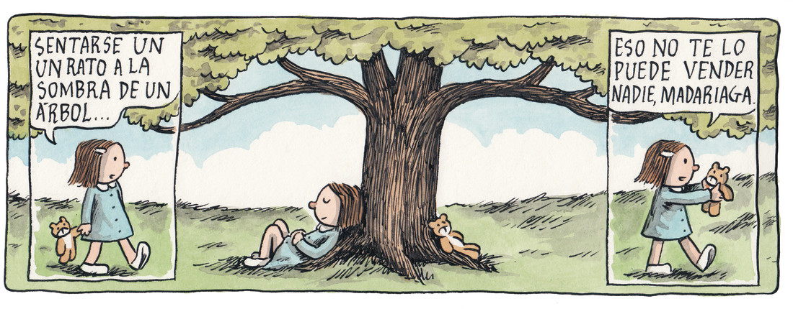
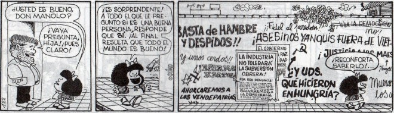
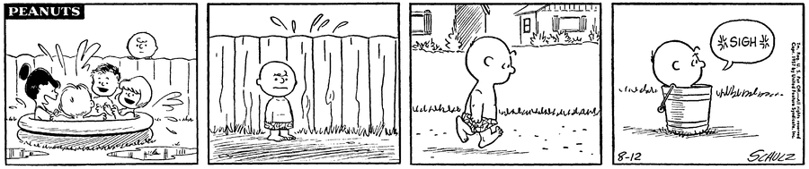
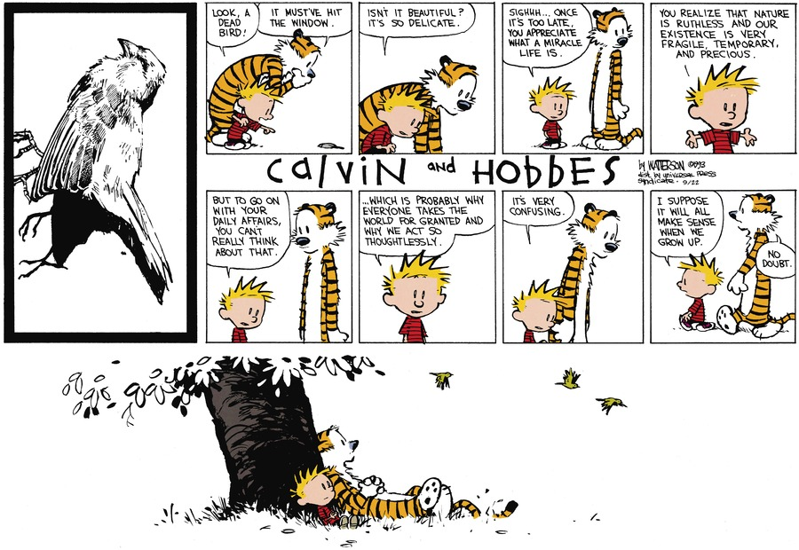

El club de los niños filósofos

Fuente: Por Liniers
Sí, es un título pretencioso. Lo sé. Y parcialmente falso, porque siendo estrictos, no se trata de un club ni de niños (no ficticios) y, la verdad, tampoco de filosofía. Pero ahora que tengo tu atención, quiero que pienses un momento en personajes como Calvin, de Calvin and Hobbes; Mafalda, Charlie Brown y algunos de los personajes de Macanudo. O mejor aún, en sus padres: Bill Waterson, Quino, Charles Schulz y Liniers, los verdaderos niños.
Espero no ser malinterpretado, porque de ningún modo es un agravio. Lo que trato de resaltar es ese “no sé qué” que tienen en común las tiras mencionadas. Pienso, por ejemplo, que el hecho de que los personajes sean niños predispone a uno a pensar que lo que va a encontrar en estos cómics no va más allá de aventuras y bromas infantiles. Hasta que, claro, uno lee atentamente a estos niños gigantes y lo que encuentra realmente es una mezcla de humor elusivo, crítica social, una imaginación desbordante, melancolía y contemplación a partes iguales.

Fuente: Por Liniers

Fuente: Imagenes de Frases
{kind=link}
Cada uno de estos cómics explora diferentes puntos de vista de la infancia, mostrando el crecimiento interior de sus personajes a través de su descubrimiento del mundo; sus problemas, cuestionamientos e incertidumbres ante la enorme complejidad de la vida. En muchos formas, estos niños nos muestran lo que es el sentido básico de humanidad.

Fuente: GOCOMICS
Como lector, vuelvo otra vez a una parte de mi infancia a través de estos cómics, para descubrir en las aventuras de Enriqueta, Calvin, Mafalda y Charlie que está bien perderse en la imaginación. Que está bien dudar sobre el mundo, la realidad y nosotros mismos y, como todo niño deseó, sentirse grande y pequeño a la vez.

Fuente: GOCOMICS
Este texto apareció primero en Comicgram.